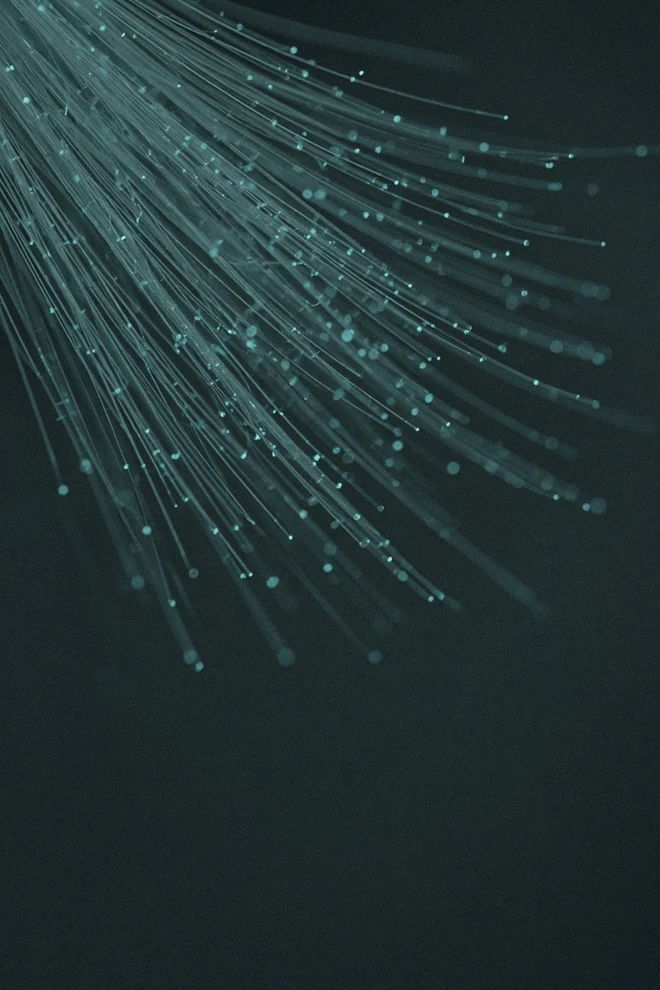
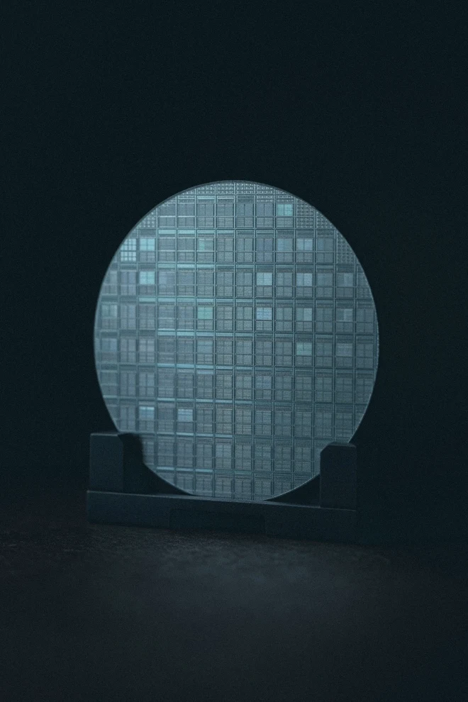
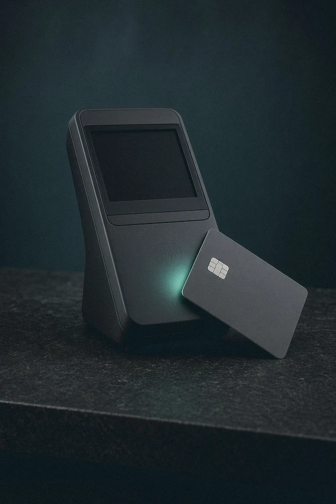
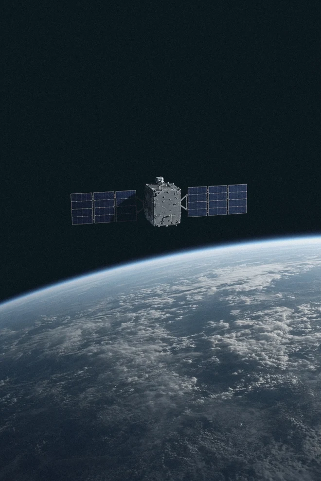
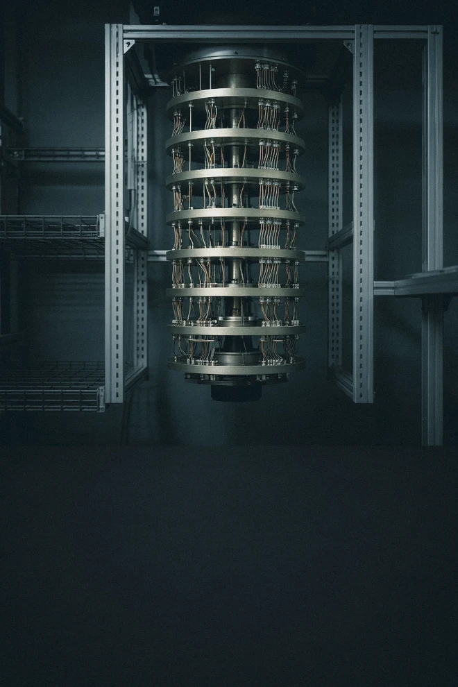
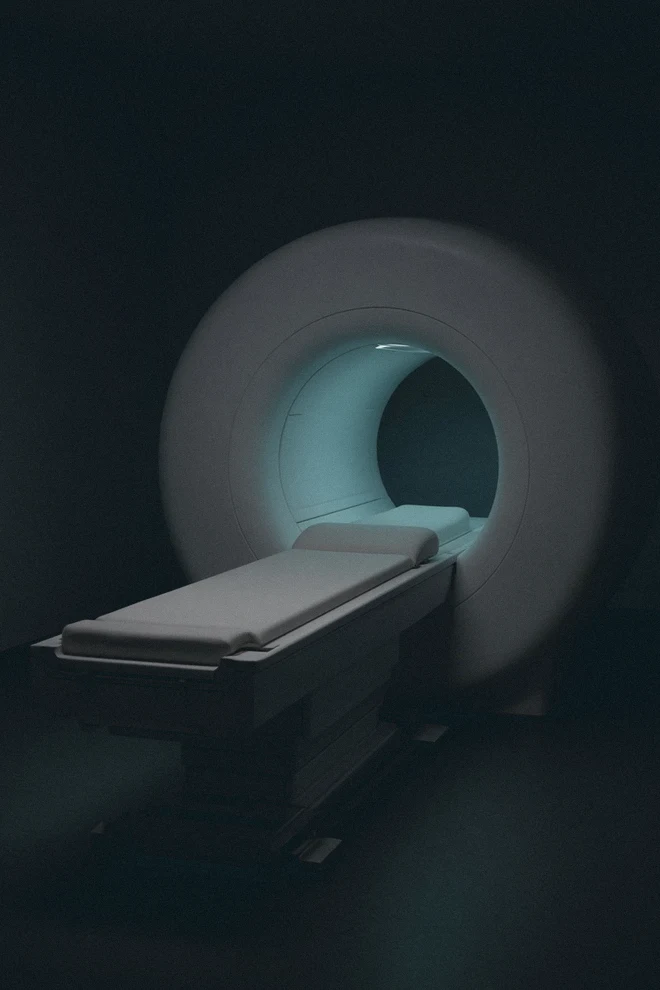

Selskaberne bag fonden.
Vi ser teknologi som mere end software. Udforsk fondens selskaber i 12 temaer — fra chips og energi til rumfart og sundhed.
Fondens 12 temaer

Software & AI
Hvilken opgave er kunden afhængig af at få løst?
… % af fonden · Udforsk temaet →
Chips og halvledere
Hvilken del af chippen er selskabets forretning?
… % af fonden · Udforsk temaet →
Datacentre
Hvad skal der til for, at maskinerne arbejder sammen?
… % af fonden · Udforsk temaet →
Energi og elnet
Hvor i energisystemet leverer selskabet sin løsning?
… % af fonden · Udforsk temaet →
Platformsøkonomi
Hvem bruger platformen, og hvem betaler den?
… % af fonden · Udforsk temaet →
Fintech
Hvem betaler for en gratis betaling?
… % af fonden · Udforsk temaet →
Krypto
Hvilken aktivitet giver selskabet en indtægt?
… % af fonden · Udforsk temaet →
Robotter & fysisk AI
Leverer selskabet en sans, styringen eller hele maskinen?
… % af fonden · Udforsk temaet →
Rumfart
Er produktet en opsendelse, en forbindelse eller data?
… % af fonden · Udforsk temaet →
Kvantecomputere
Hvad er demonstreret, og hvad er faktisk en forretning?
… % af fonden · Udforsk temaet →
Sundhed og biotek
Hvilket produkt er dokumenteret, og hvem betaler?
… % af fonden · Udforsk temaet →
Råstoffer
Hvor i vejen fra råstof til materiale arbejder selskabet?
… % af fonden · Udforsk temaet →Hvor meget fylder temaerne?
Andel af fonden pr. … . Bjælkerne er skaleret efter det største tema.
De … største selskaber
Tilsammen … % af fonden pr. … . Bjælkerne er skaleret efter det største selskab.
Få mere indsigt i porteføljen
Selskaber, sektorer, afkast, risiko og beregningsmetode.
Vigtig information
Henter vigtig information …